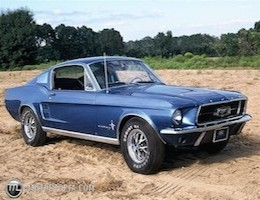
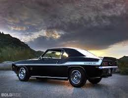
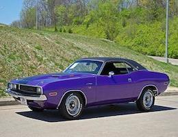

Muscle Car is a term used to refer to a variety of high-performance automobiles.
The Merriam-Webster dictionary defines muscle cars as any of a group of American-made 2-door
sports coupes with powerful engines designed for high-performance driving. A large V8 engine is
fitted in a 2-door, rear wheel drive, family-style, mid-size, or full-size car designed for four
or more passengers. Sold at an affordable price, muscle cars are intended for mainly street use
and occasional drag racing.
1967 Ford Mustang

The introduction of the Mustang created a new class of automobile known as the pony car.
The Mustang's styling, with its long hood and short deck, proved wildly popular and
inspired a host of imitators.
In 1967, Ford's Mustang saw its first major redesign. For the first time since its launch,
the car faced some serious competition. This resulted in Ford evaluating the Mustang's
strengths and weaknesses. In addition to the Pontiac's Firebird, Mercury's Cougar, and
Plymouth's Barracuda, Chevrolet had plans to roll out their new Chevy Camaro muscle car.
This resulted in Ford duking it out with its competition by creating a more muscular and
powerful Ford Mustang.
Feeling pressure from their competition, Ford needed to make the Mustang more powerful so it
could keep up with its competitors. The answer came in the form of a larger car. Although the
wheelbase remained the same at 108 inches, the length of the vehicle was increased by two
inches resulting in 183.6 inches from front to back. The car also featured a front-suspension
track that was widened by 2.5 inches. The increased body size allowed Ford to put their first
big-block engine in a Mustang. This optional 390-cubic inch 6.4L V-8 motor was capable of
producing an impressive 320 hp. As such, Ford was clearly able to keep up with the big dogs
on the road. In fact, according to reports, the 390 cid equipped Mustang could achieve 0-60 mph
in 7.4 seconds with a top speed of 115 mph.
1969 Chevrolet Camaro

This was the last of the first generation Camaro. Many consider it the best looking of all the
Camaros. General Motors must have thought so too because it was the inspiration for the reintroduced
2010 Camaro. The Camaro paced the Indianapolis 500 for the second time in 1969. The Pace Car
was based on a modified SS/RS Convertible. A total of 3,675 examples were sold to the motoring public.
The Camaro received new sheet metal in 1969. The look was more angular than the two previous Camaros.
Wheel wells were squared off, new front and rear ends were added and this all contributed to a longer
and lower look. The interior was updated with square gauges and an optional tachometer. The last of the
first generation Camaros even looked "faster" than the previous 1968 Camaro. Chevy offered buyers a
plethora of engine choices, everything from a low-budget straight line six cylinder engine to an
incredible 427 cubic inch monster that was part of the special order ZL-1.
For the weekend drag racer with the means to purchase a new car, there were few choices better than
the 1969 Yenko Camaro. It came with an "L72" 427 cubic inch big block meant for the 1969 Corvette.
This 425 brake horse power engine was mated to a four speed manual transmission. Other upgrades
included front disk brakes, a heavy duty radiator and a stiffer suspension. Appearance upgrades
included a special hood, a rear spoiler and Yenko stripes. The combination was capable of sub 12
second quarter miles. That was more expensive than the Z28or the Super Sport but a bargain when
compared to the incredible Camaro ZL1.
1970 Dodge Challenger

It took Chrysler six years to develop a true pony car, and by the time the Challenger was introduced,
it was hard to do anything really new with the formula. Offering an astonishing range of engine
choices, from a docile slant six to the earth-shaking Hemi, was Dodge's way of getting attention. The
1970 Dodge Challenger R/T 440 Six Pack was one muscle car that definitely would get you noticed.
Challenger used the same unibody platform as Plymouth's new Barracuda, but its wheelbase was two inches
longer to provide slightly more rear-seat room. It was sold in hardtop and convertible form, with
performance versions wearing the familiar R/T label. Standard R/T power came from the 335-bhp 383.
Two 440s were offered, the four-barrel Magnum with 375 bhp and the tri-carb Six Pack with 390.
The 440s and the Hemi came standard with TorqueFlite automatic. Ordering the four-speed brought a
pistol-grip Hurst shifter and a Dana 60 axle. Gear ratios climbed from 3.23:1 to 4.10:1, with limited-
slip an extra-cost item. All R/Ts got a beefed suspension, and 440 and Hemi cars got 15-inch 60 series
tires, though such essentials as power steering and front disc brakes were optional.